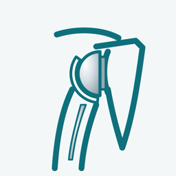

「リバース型人工肩関節 手術手順3D」は、リバース型人工肩関節置換術（RSA）の手術の流れを、皮膚の切開から閉創まで3Dで順に示す説明用のアプリです。患者さんとご家族への説明、医学生・研修医・看護師・リハビリスタッフの学習にお使いいただけます。
インターネット接続は必要ですか？
不要です。すべての機能がオフラインで動作します。
医療機器ですか？
いいえ。手術の流れを説明するための教材であり、診断や治療方針の決定を目的としたものではありません。表示される形や動きは単純化した模式図で、実際の手順・器械・部品は施設や機種によって異なります。
ご意見・不具合のご報告は、下記までメールでお送りください。
natchi@symphony.plala.or.jp